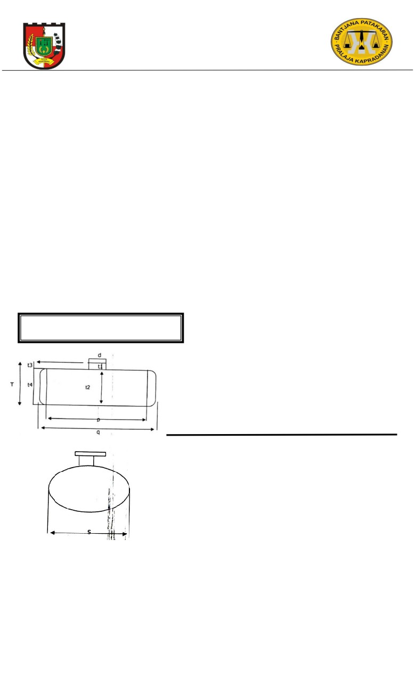

PEMERINTAH KOTA PEKANBARU
DINAS PERDAGANGAN DAN PERINDUSTRIAN
UPT METROLOGI LEGAL
Jl. Jend. Ahmad Yani No. 128 Telp. (0761)8440334 Pekanbaru (28127)
SURAT KETERANGAN HASIL PENGUJIAN
700 / DPP / UPT 1.3 / 218 / X /2020
UTTP
: Tangki Ukur Mobil
Pemilik
: PT. USAHA MAS JASATAMA
Merk/Buatan
: MECO
Model / Nomor Seri
: OVAL SQUARE
Volume Nominal
: 24000 Liter
(3 x 8000 Liter)
Merk Kendaraan
: HINO
No. POL / CHASIS
: BK 8027 ER
Metode
: Penakaran Masuk
Suhu Dasar
: 28 C
Di Tera Oleh
: MASRIZALDI, S.T
NIP. 19751206 200902 1 002
M. SUBKHAN, S.Si
NIP. 19770818 200501 1 004
Tanggal
: 14 Oktober 2020
Hasil
: Memenuhi Syarat tehnis kemetrologian Tera Tahun 2020
CAP TERA PADA INDEKSI ISI NOMINAL
DAN TUTUP DOM : SP6 (20)
KOMPARTEMEN
I
II
III
t1
= 0,000.0 mm
= 0,000.0 mm
= 0,000.0 mm
t2
= 0,000.0 mm
= 0,000.0 mm
= 0,000.0 mm
t3
= 0,000.0 mm
= 0,000.0 mm
= 0,000.0 mm
t4
= 0,000.0 mm
= 0,000.0 mm
= 0,000.0 mm
T
= 0,000.0 mm
= 0,000.0 mm
= 0,000.0 mm
d
= 0,000.0 mm
= 0,000.0 mm
= 0,000.0 mm
p
= 0,000.0 mm
= 0,000.0 mm
= 0,000.0 mm
q
= 0,000.0 mm
= 0,000.0 mm
= 0,000.0 mm
s
= 0,000.0 mm
= 0,000.0 mm
= 0,000.0 mm
r
= 0,000.0 mm/I
= 0,000.0 mm/I
= 0,000.0 mm/I
DISAHKANX` BERDASARKAN UNDANG-UNDANG RI NOMOR 2 TAHUN 1981 TENTA
METROLOGI LEGAL DENGAN MEMBUBUHKAN TANDA TERA SAH DAN JAMINAN
Pekanbaru, 14 Oktober 2020
KEPALA UPT METROLOGI LEGAL
KOTA PEKANBARU
CATATAN :
1. Ditera ulang kembali
14 oktober 2022
2. Tangki ukur mobil terdiri dari
3 (tiga) kompartemen
3. Kepekaan di sekitar indeks petunjuk = R
AMRIZALMI, ST
4. Salinan / foto copy Surat Keterangan Pengujian ini
Penata Muda Tk.I(III/B)
tidak berlaku tanpa pengesahan dari Kepala UPT
NIP. 19680714 200801 1 016
Metrologi Peknabaru